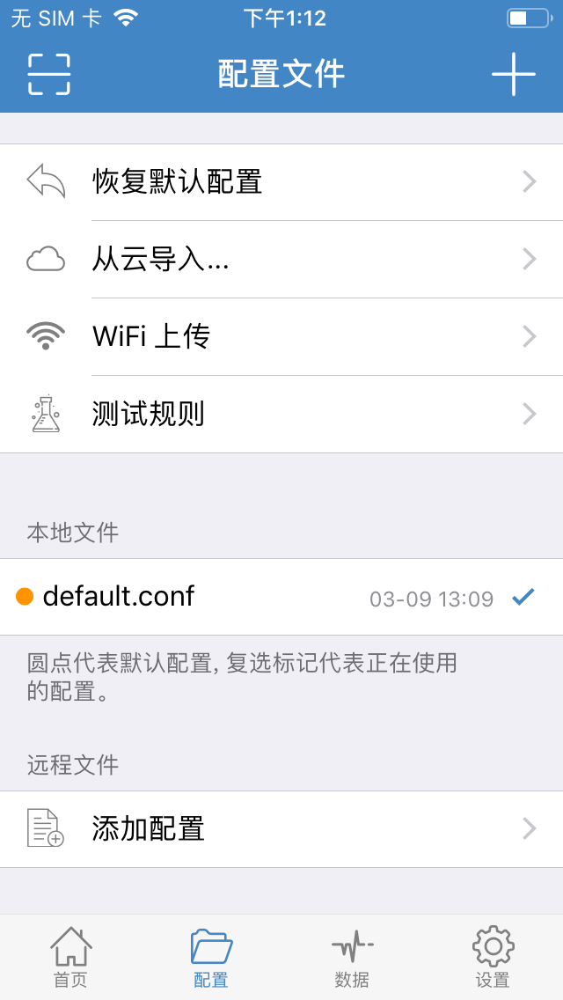
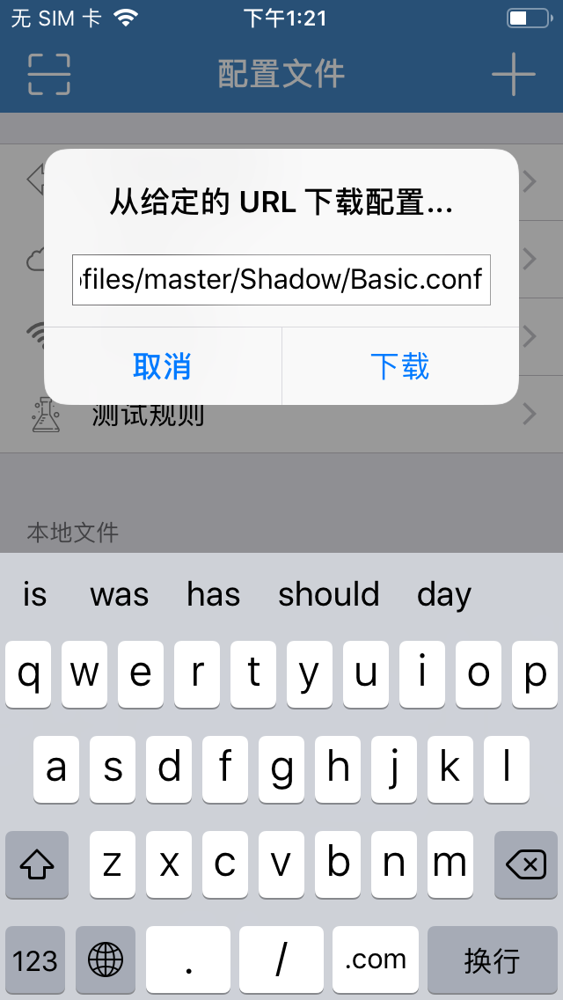
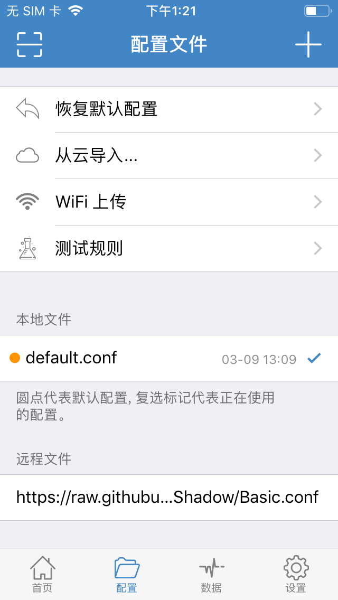
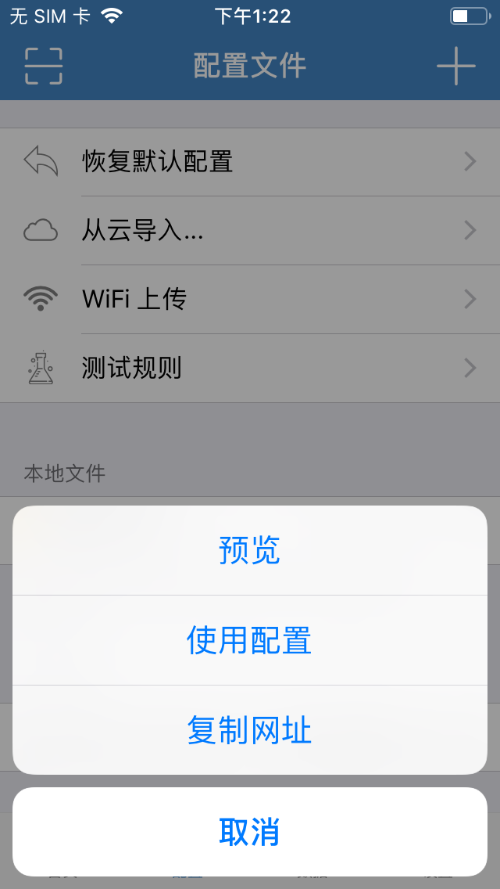
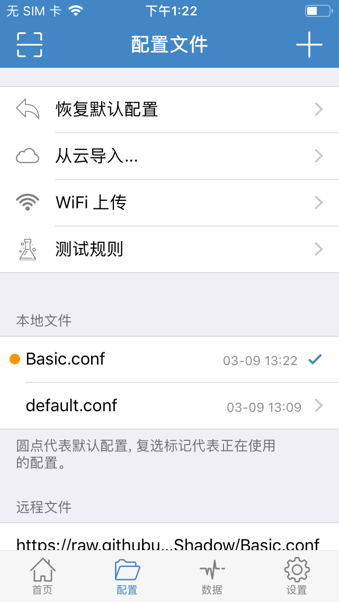
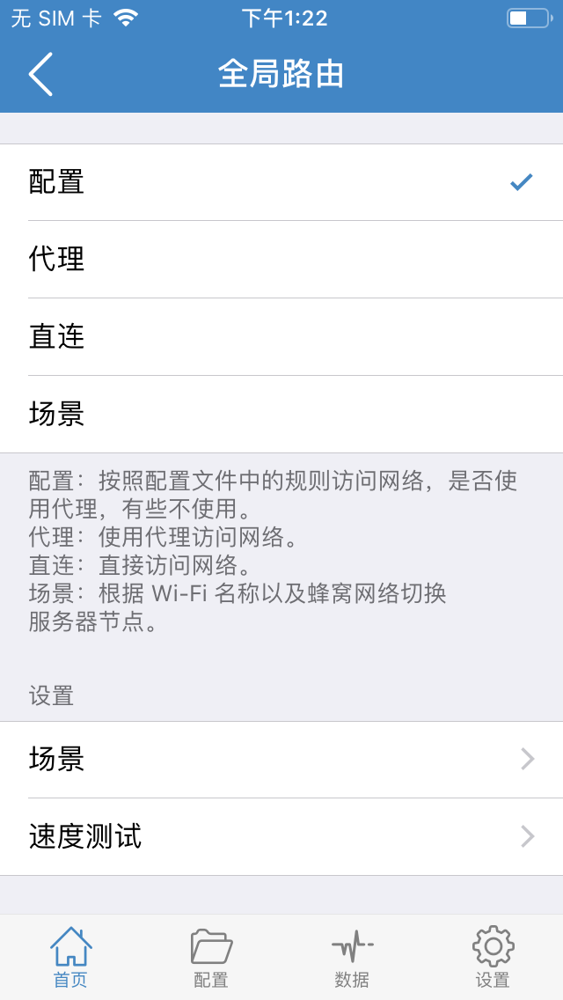

1.到这里您应该已经可以在ios设备上实现基础翻墙功能了让我们开始进阶体验
2.推荐您先观看一边教程，再开始设置，这样更高效
- 首先将下面的链接，发送到手机上，并在手机上复制好本链接
-
标准版
简单概括：开启代理时，国内网站依旧走手机流量（或wifi流量），遇到被墙网站则走代理流量。
使用公共 DNS 达到快速、准确、稳定及安全的解析
国内应用及网站直连
海外应用及网站加速
Apple 服务加速（具体看底部说明）
海外媒体部分服务可指定节点（具体看底部说明）
-
专业版
简单概括：开启代理时，首先具有标准版的所有功能，另外有去广告，拦截垃圾信息等。
标准版所有功能
拦截应用及网站的行为分析、数据统计、隐私跟踪
拦截运营商劫持
拦截应用的广告（网页广告请使用 Safari 内容拦截器如 ADGuard (在「过滤器」中添加「EasyList China」) 或自带去广告功能的浏览器。）
拦截臭名昭著的诈骗网站（如思杰马克丁伪造的一系列软件官网、MacKeeper等）
- 配置规则让翻越长城更高效 步骤1
- 配置规则让翻越长城更高效 步骤2
- 配置规则让翻越长城更高效 步骤3
- 配置规则让翻越长城更高效 步骤4
- 配置规则让翻越长城更高效 步骤5
- 配置规则让翻越长城更高效 步骤6
- 配置规则让翻越长城更高效 步骤7
- 恭喜您，进阶教程设置完成。
标准版：
https://raw.githubusercontent.com/ConnersHua/Profiles/master/Shadow/Basic.conf
专业版：
https://raw.githubusercontent.com/ConnersHua/Profiles/master/Shadow/Pro.conf
关于版本区别：
如下图所示，点击底部的《配置》按钮，进入配置中心，并点击最底部的《添加配置》。
如下图所示，粘贴本教程开头复制的链接，《标准版》或《标准版》
如下图所示，点击底部的《远程文件》栏目框内的链接
如下图所示，点击《使用配置》选项
如下图所示，在《本地文件》栏目。选择《Basic.conf》或《Pro.conf》
如下图所示，先点击底部的《首页》选项，然后点击下方的《全局路由》选项

如下图所示，点击《配置》选项，即完成了所有设置

Copyright © 2019 hidden proxy. All Rights Reserved.